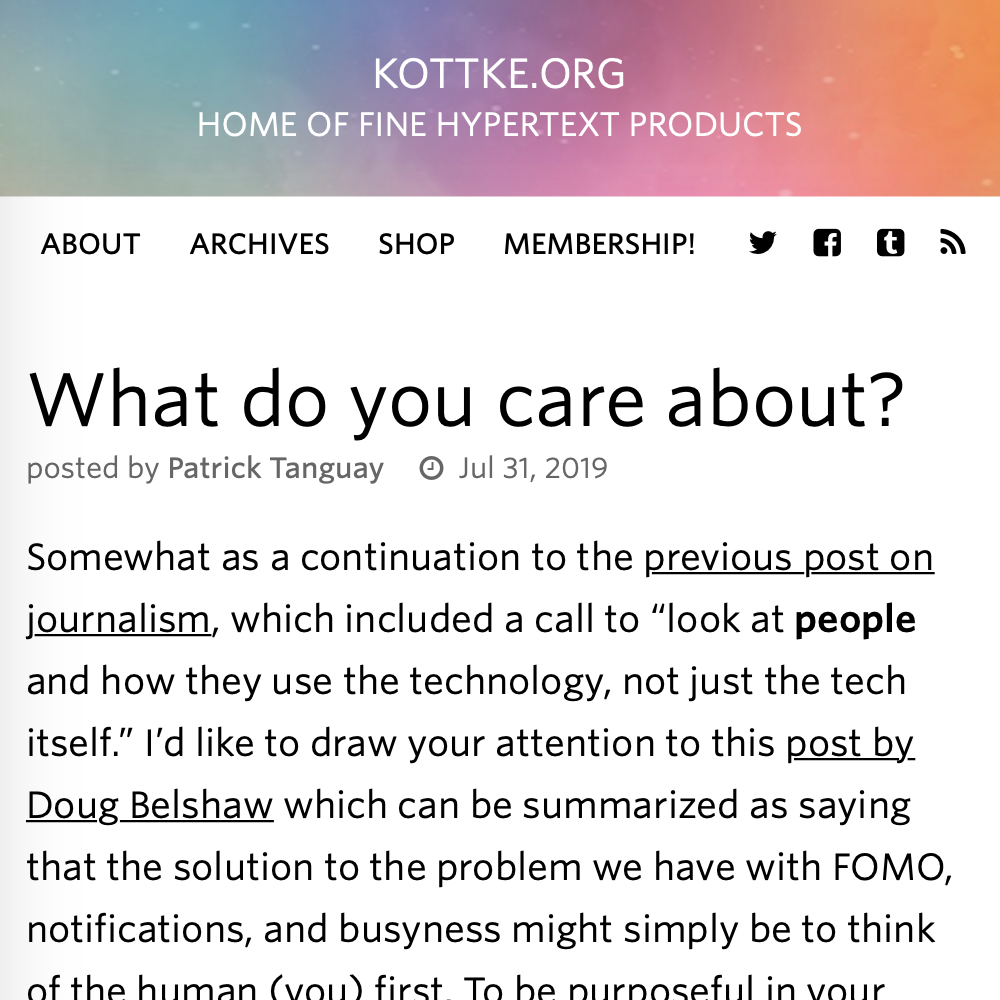

Kottke: What do you care about?

I've had this tab open for months (let's ignore the irony in that), but I think it has more to do with the constant message that I can be reminded of:
Know who you are, what you care about, and the difference you’re trying to make in the world.
I love Kathy Sierra's tips to combat information anxiety (or modern FOMO). Potentially what keeps speaking to me is summarized in this quote from Gandhi in the linked article by Doug Bradshaw:
Happiness is when what you think, what you say, and what you do are in harmony.